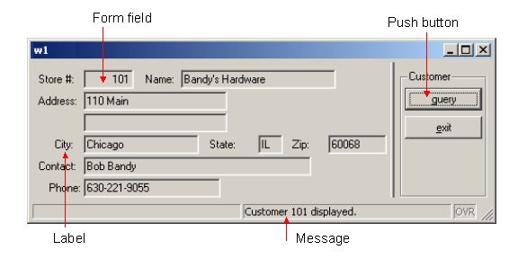
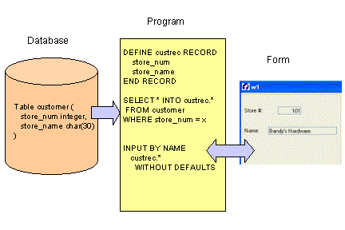

Summary:
This example program opens a WINDOW containing a FORM to display information to the user. The appearance of the form is defined in a separate form definition file. The program logic to display information on the form is written in the .4gl program module. The same form file can be used with different applications. This separation of user interface and business logic provides maximum flexibility.
The options to retrieve data or exit are defined as actions in a MENU statement in the .4gl file. By default, push buttons are displayed on the form corresponding to the actions listed in the MENU statement. When the user presses the "query" button, the code listed for the action statement is executed - in this case, an SQL SELECT statement retrieves a single row from the customer table and displays it on the form.
A FORM can contain form fields for entering and displaying data; explanatory text (labels); and other form objects such as Buttons, Topmenus (dropdown menus), toolbar icons, folders, tables, and CheckBoxes. Form objects that are associated with an action are called action views. Messages providing information to the user can be displayed on the form.

Display on Windows platforms
A program creates a window with the OPEN WINDOW instruction, and destroys a window with the CLOSE WINDOW instruction. The OPEN WINDOW ... WITH FORM instruction can be used to automatically open a window containing a specified form:
OPEN WINDOW custwin WITH FORM "custform"
When you are using a graphical front end, windows are created as independent resizable windows. By default windows are displayed as normal application windows, but you can specify a Presentation Style. The standard window styles are defined in the default Presentation Style file (FGLDIR/lib/default.4st):
If the WITH FORM option is used in opening a window, the CLOSE WINDOW statement closes both the window and the form.
CLOSE WINDOW custwin
When the runtime system starts a program, it creates a default window named SCREEN. This default window can be used as another window, but it can be closed if not needed.
CLOSE WINDOW SCREEN
Note: The appropriate Genero Front-end Client must be running for the program to display the window and form.
Your form can display options to the user using action views - buttons, dropdown menus (top menus), toolbars, and other items on the window. See Form Specification Files for a complete list of form items.
An action defined in the .4gl module, which identifies the program routine to be executed, can be associated with each action view shown on the form.. You define the program logic to be executed for each action in the .4gl module.
ON ACTION query CALL query_cust()
You can also use ON ACTION clauses with some other interactive BDL statements, such as INPUT, INPUT ARRAY, DIALOG, and DISPLAY ARRAY.
.See MENUs for a complete discussion of the statement and all its options.
The MESSAGE and ERROR statements are used to display text containing a message to the user. The text is displayed in a specific area, depending on the front end configuration and window style. The MESSAGE text is displayed until it is replaced by another MESSAGE statement or field comment. You can specify any combination of variables and strings for the text. BDL generates the message to display by replacing any variables with their values and concatenating the strings:
MESSAGE "Customer " || l_custrec.store_num , || " retrieved."
The Localized Strings feature can be used to customize the messages for specific user communities. This is discussed in Chapter 10.
This portion of the dispcust.4gl program connects to a database, opens a window and displays a form and a menu.
| Program dispcust.4gl |
|
Notes:
02 The SCHEMA
statement is
required since variables are defined as
LIKE a database table
in the
function query_cust.06 opens the connection to the custdemo
database.08 closes the default
window named SCREEN,
which is opened each time the runtime system
starts a program
containing interactive statements09 uses the WITH FORM syntax
to open a window
having the identifier custwin containing the form
identified as custform. The window name must be
unique among all windows defined in the program. Its scope is the
entire program. You can use the window's name to reference any open
window in other modules with other statements. Although there can
be multiple open windows, only one window may be current at a given
time. 10 displays a string
as a MESSAGE to the user.
The message will be displayed until it is replaced by a different
string. 12 through 17
contain the interactive MENU
statement. By default, the menu options query
and exit are displayed as buttons in the window, with Customer
as the menu title. When the MENU
statement is executed, the buttons are enabled, and control is
turned over to the user. 19 The window custwin is closed,
which
automatically closes the form, removing both
objects from the application's
memory. 21 The program disconnects from the
database; as there are no more statements in MAIN, the program
terminates.In addition to defining individual variables, the DEFINE statement can define a record, a collection of variables each having its own data type and name. You put the variables in a record so you can treat them as a group. Then, you can access any member of a record by writing the name of the record, a dot (known as dot notation), and the name of the member.
DEFINE custrec RECORD
store_num LIKE customer.store_num
store_name LIKE customer.store_name
END RECORD
DISPLAY custrec.store_num
Your record can contain variables for the columns of a database table. At its simplest, you write RECORD LIKE tablename.* to define a record that includes members that match in data type all the columns in a database table. However, if your database schema changes often, it's best to list each member individually, so that a change in the structure of the database table won't break your code. Your record can also contain members that are not defined in terms of a database table.
A subset of SQL, known as Static SQL, is provided as part of the BDL language and can be embedded in the program. At runtime, these SQL statements are automatically prepared and executed by the Runtime System.
SELECT store_num, store_name INTO custrec.* FROM customer
Only a limited number of SQL instructions are supported this way. However, Dynamic SQL Management allows you to execute any kind of SQL statement.
A common technique is to use the names of database columns as the names of both the members of a program record and the fields in a form. Then, the DISPLAY BY NAME statement can be used to display the program variables. By default, a screen record consisting of the form fields associated with each database table column is automatically created. BDL will match the variable name to the name of the form field, ignoring any record name prefix:
DISPLAY BY NAME custrec.*
The program variables serve as the intermediary between the database and the form that is displayed to the user. Values from a row in the database table are retrieved into the program variables by an SQL SELECT statement, and are then displayed on the form. In Chapter 6 you will see how the user can change the values in the form, resulting in changes to the program variables, which could then be used in SQL statements to modify the data in the database.

This function retrieves a row from the customer table and displays it in a form.
| Function query_cust |
|
Notes:
01 is the beginning of the function query_cust.
No variables are passed to the function.02 thru 12 DEFINE
a record l_custrec as LIKE columns in the customer
database table, listing each variable separately.14 thru 25 SELECT ..
INTO can be used, since
the statement will retrieve only one row from the database. The SELECT statement lists each column name to be retrieved, rather than
using SELECT *. This allows for the possibility that additional columns might be added to a table at a
future date. Since the SELECT list retrieves values for all the variables in the program record,
in the order listed in the DEFINE statement, the shorthand INTO l_custrec.*
can be used.27 The names in the program record l_custrec match the names of
screen fields on the form, so DISPLAY BY NAME can be used.
l_custrec.* indicates that all of the members of the program record are to be displayed.28 and 29 A string for the MESSAGE
statement is concatenated together using the double pipe ( || ) operator and displayed. The message consists of the string "Customer ", the
value of l_custrec.store_num, and the string " displayed".There are no additional statements in the function, so the program returns to the MENU statement, awaiting the user's next action.
You can specify the layout of a form in a form specification file, which is compiled separately from your program. The form specification file defines the initial settings for the form, which can be changed programmatically at runtime.
Form specification files have a file extension of .per . The structure of the form is independent of the use of the form. For example, one function can use a form to display a database row, another can let the user enter a new database row, and still another can let the user enter criteria for selecting database rows.
A Form can contain the following types of items:
Each form and form item has attributes that control its appearance and behavior. See Form Specification Files, Form Specification File Attributes, and The Interaction Model for additional information about form items.
Styles from a Presentation Styles file can be applied to the form and form items.
A basic form specification consists of the following sections:
This specifies the database schema file to be used when the form is compiled. It is required if any form items are defined as data types based on a column of a database table.
SCHEMA custdemo
These sections are provided to allow you to define the decoration for action views (action defaults), as well as to define Topmenus and Toolbars for the form. In this case, the definitions are specific to the form. If your definitions are in external XML files instead, they can be applied to any form.
This is discussed in chapter 5.
This section defines the appearance of a form using a layout tree of containers, which can hold other containers or can define a screen area. Some of the available containers are GRID, VBOX, HBOX, GROUP, FOLDER, and PAGE.
The simplest layout tree could have only a GRID container defining the dimensions and the position of the logical elements of a screen:
LAYOUT GRID grid-area END END
The END keyword is mandatory to define the end of a container block.
The grid-area is delimited by curly braces. Within this area, you can specify the position of form items or interactive objects such as BUTTON, COMBOBOX, CHECKBOX, RADIOGROUP, PROGRESSBAR, etc.
Simple form fields, delimited by square brackets ( [ ] ), are form items used to display data and take input. Generally, the number of characters in the space between the brackets defines the width of the region to be used by the item. For example, in the grid-area, the following field could be defined:
[f01 ]
This form field has an item tag of f01, which will be used to link the field to its definition in the ATTRIBUTES section of the form specification.
Interactive form items, such as COMBOBOX, CHECKBOX, and RADIOGROUP, can be used instead of simple form fields to represent the values in the underlying formfield. Special width calculations are done for some of these form items, such as COMBOBOX, BUTTONEDIT, and DATEEDIT. If the default width generated by the form compiler does not fit, the - dash symbol can be used to define the real width of the item.
Text in the grid-area that is outside brackets is display-only text, as in the word Company below:
Company [f01 ]
If a database table or database view is referenced elsewhere in the form specification file, in the ATTRIBUTES section for example, the table or view must be listed in the TABLES section:
TABLES
customer
END
A default screen record is automatically created for the form fields associated with each table listed in this section.
The ATTRIBUTES section defines properties of the items used in the form.
For form fields (items that can be used to display data or take input) the definition is:
<item-type> <item-tag> = <item-name>, <attribute-list> ;
EDIT f01 = customer.cust_num, REQUIRED;
COMBOBOX f03 = customer.state;
CHECKBOX f04 = formonly.propcheck;
The most commonly used item-type, EDIT, defines a simple line edit box for data input or display. This example uses an EDIT item-type for the form field f01.The COMBOBOX and CHECKBOX item types present the data contained in the form fields f03 and f04 in a user-friendly way.
The item-name must specify a database column as the name of the display field, or must be FORMONLY (fields defined as FORMONLY are discussed in chapter 11.) Fields are associated with database columns only during the compilation of the form specification file, to identify the data type for the form field based on the database schema. After the form compiler identifies the data types, the association between fields and database columns is broken, and the item-name is associated with the screen record.
Form field and form item definitions can optionally include an attribute-list to specify the appearance and behavior of the item. For example, you can define acceptable input values, on-screen comments, and default values for fields; you can insure that a value is entered in the field during the input of a new row (REQUIRED); columns in a table can be specified as sortable or non-sortable; numbers and dates can be formatted for display; data entry patterns can be defined and input data can be upshifted or downshifted.
A form field can be an EDIT, BUTTONEDIT, CHECKBOX, COMBOBOX, DATEEDIT, IMAGE, LABEL, PROGRESSBAR, RADIOGROUP, or TEXTEDIT.
For form items that are not form fields (BUTTON, CANVAS, GROUP, static IMAGE, static LABEL, SCROLLGRID, and TABLE) the definition is:
<item-type> <item-tag> : <item-name> , <attribute-list> ;
Examples:
BUTTON btn1: print, TEXT = "Print Report";
LABEL lab1 : label1, TEXT ="Customer";
The INSTRUCTIONS section is used to define explicit screen records or screen arrays. This is discussed in Chapter 7.
This form specification file is used with the dispcust.4gl program to display program variables to the user. This form uses a layout with a simple GRID to define the display area.
| custform.per |
|
01
lists the database schema file
from which
the form field data
types will be obtained.03 through 15 delimit the
LAYOUT section of the form.04 thru 14 delimit the GRID area, indicating
what
will be displayed to the user between the curly brackets on lines 05 and 13.17 The TABLES statement is required since the
field descriptions reference the columns of the database table customer.20
thru 28. As an example,
f01
is the display area for a program variable having
the same data type definition as the store_num column in the customer
table
of the custdemo database. 22 All of the item-tags
in the form layout section are listed in the ATTRIBUTES
section. For example, the item-tag f01 is listed as
having an item-type of EDIT. This field will be used for
display only in this program, but the same form will be used for input
in a
later program. An additional attribute, REQUIRED, indicates
that when this form is used for input, an entry in the field
f01
must be
made. This prevents the user from trying to add a row with a NULL
store_num to the customer table, which would result in an error message from the
database. 23 The second field is defined
with the attribute COMMENT,
which specifies text to be displayed when this field gets the focus, or
as a tooltip when the mouse goes over the field.When this form is compiled (translated) using the fglform tool, an XML file is generated that has a file extension of .42f. The runtime system uses this file along with your programs to define the Abstract User Interface.
Compile the form:
fglform custform.perCompile the single module program:
Execute the program:fglcomp dispcust.4gl
fglrun dispcust.42m